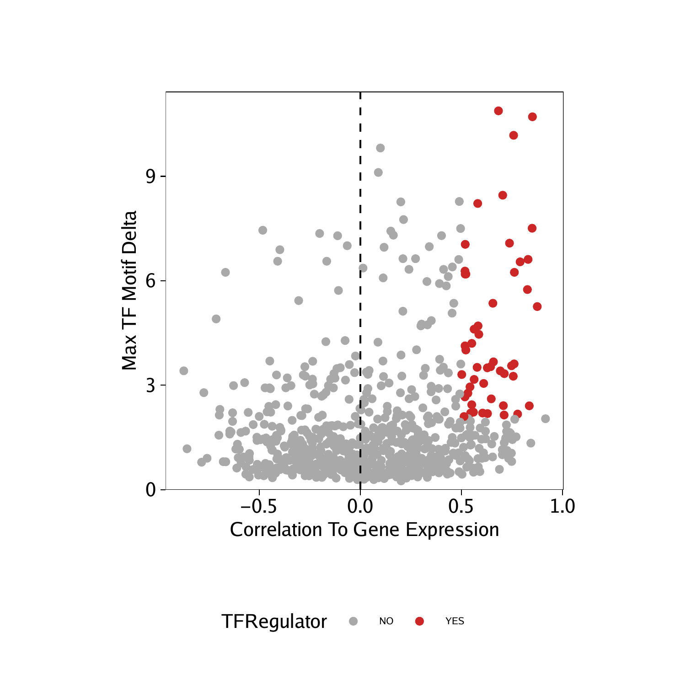
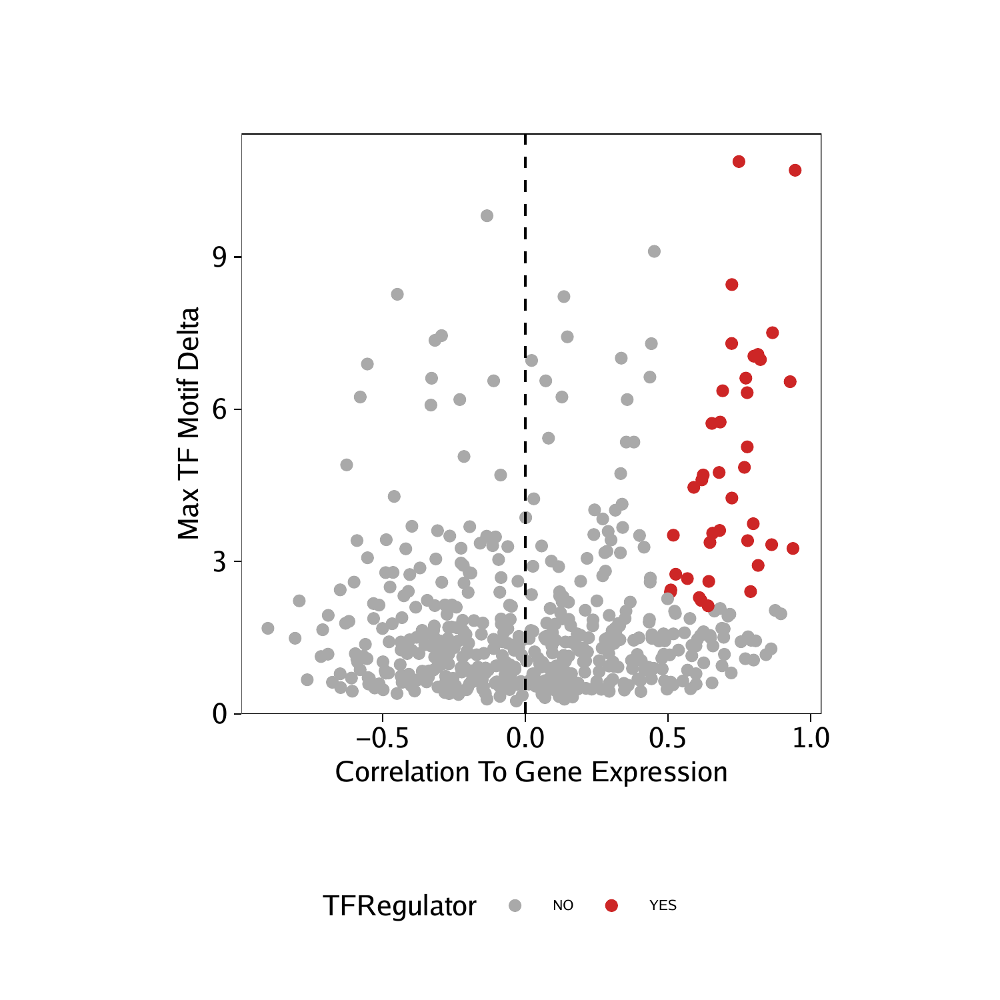

ATAC-seq allows for the unbiased identification of TFs that exhibit large changes in chromatin accessibility at sites containing their DNA binding motifs. However, families of TFs (for ex. GATA factors) share similar features in their binding motifs when looking in aggregate through position weight matrices (PWMs).
This motif similarity makes it challenging to identify the specific TFs that might be driving observed changes in chromatin accessibility at their predicted binding sites. To circumvent this challenge, we have previously ATAC-seq and RNA-seq to identify TFs whose gene expression is positively correlated to changes in the accessibility of their corresponding motif. We term these TFs “positive regulators”. However, this analysis relies on matched gene expression data which may not be readily available in all experiments. To overcome this dependency, ArchR can identify TFs whose inferred gene scores are correlated to their chromVAR TF deviation z-scores. To achieve this, ArchR correlates chromVAR deviation z-scores of TF motifs with gene activity scores of TF genes from the low-overlapping cell aggregates. When using scRNA-seq integration with ArchR, gene expression of the TF can be used instead of inferred gene activity score.
Step 1. Identify Deviant TF Motifs
The first part of identifying positive TF regulators is identification of deviant TF motifs. We performed this analysis in a previous chapter, creating a MotifMatrix of chromVAR deviations and deviation z-scores for all motifs. We can obtain this data, averaged by clusters, by using the getGroupSE() function which returns a SummarizedExperiment.
seGroupMotif <- getGroupSE(ArchRProj = projHeme5, useMatrix = "MotifMatrix", groupBy = "Clusters2")
## 2020-04-15 12:03:08 : Successfully Created Group Matrix, 0.133 mins elapsed.
Because this SummarizedExperiment object comes from the MotifMatrix is has two seqnames - “deviations” and “z” - corresponding to the raw deviations and deviation z-scores from chromVAR.
## class: SummarizedExperiment
## dim: 1740 11
## metadata(0):
## assays(1): MotifMatrix
## rownames(1740): f1 f2 … f1739 f1740
## rowData names(3): seqnames idx name
## colnames(11): B CD4.M … PreB Progenitor
## colData names(16): TSSEnrichment ReadsInTSS … FRIP nCells
We can subset this SummarizedExperiment to just the deviation z-scores.
seZ <- seGroupMotif[rowData(seGroupMotif)$seqnames=="z",]
Then we can identify the maximum delta in z-score between all clusters. This will be helpful in stratifying motifs based on the degree of variation observed across clusters.
rowData(seZ)$maxDelta <- lapply(seq_len(ncol(seZ)), function(x){
rowMaxs(assay(seZ) - assay(seZ)[,x])
}) %>% Reduce("cbind", .) %>% rowMaxs
Step 2. Identify Correlated TF Motifs and TF Gene Score/Expression
To identify TFs whose motif accessibility is correlated with with their own gene activity (either by gene score or gene expression), we use the correlateMatrices() function and provide the two matrices that we are interested in, in this case the GeneScoreMatrix and the MotifMatrix. As mentioned previously, these correlations are determined across many low-overlapping cell aggregates determined in the lower dimension space specified in the reducedDims parameter.
corGSM_MM <- correlateMatrices(
ArchRProj = projHeme5,
useMatrix1 = "GeneScoreMatrix",
useMatrix2 = "MotifMatrix",
reducedDims = "IterativeLSI"
)
## ArchR logging to : ArchRLogs/ArchR-correlateMatrices-11a7038ad0163-Date-2020-04-15_Time-12-03-11.log
## If there is an issue, please report to github with logFile!
## When accessing features from a matrix of class Sparse.Assays.Matrix it requires 1 seqname!
## Continuing with first seqname ‘z’!
## If confused, try getFeatures(ArchRProj, ‘MotifMatrix’) to list out available seqnames for input!
## 2020-04-15 12:03:16 : Testing 825 Mappings!, 0.091 mins elapsed.
## 2020-04-15 12:03:16 : Computing KNN, 0.091 mins elapsed.
## 2020-04-15 12:03:16 : Identifying Non-Overlapping KNN pairs, 0.095 mins elapsed.
## 2020-04-15 12:03:19 : Identified 491 Groupings!, 0.138 mins elapsed.
## 2020-04-15 12:03:21 : Getting Group Matrix 1, 0.17 mins elapsed.
## 2020-04-15 12:03:33 : Getting Group Matrix 2, 0.365 mins elapsed.
## Some entries in groupMat2 are less than 0, continuing without Log2 Normalization.
## Most likely this assay is a deviations matrix.
## Getting Correlations…
## 2020-04-15 12:03:40 :
## Computing Correlation (250 of 825)
## Computing Correlation (500 of 825)
## Computing Correlation (750 of 825)
## ArchR logging successful to : ArchRLogs/ArchR-correlateMatrices-11a7038ad0163-Date-2020-04-15_Time-12-03-11.log
This function returns a DataFrame object that that contains the elements from each matrix and the correlation across the low-overlapping cell aggregates.
## DataFrame with 825 rows and 14 columns
## GeneScoreMatrix_name MotifMatrix_name cor
##
## 1 HES4 HES4_95 0.154455056755803
## 2 HES5 HES5_98 0.337473683281965
## 3 PRDM16 PRDM16_211 0.491297659378326
## 4 TP73 TP73_705 0.528916107713827
## 5 TP73-AS1 TP73_705 -0.0522225826610403
## … … … …
## 821 TFDP3 TFDP3_309 -0.0747374184980152
## 822 ZNF75D ZNF75D_272 -0.0515391773083338
## 823 ZIC3 ZIC3_215 0.3158469818621
## 824 SOX3 SOX3_759 -0.016068246967503
## 825 MECP2 MECP2_645 0.0629645419544807
## padj pval GeneScoreMatrix_seqnames
##
## 1 0.48577773775473 0.000593860315103582 chr1
## 2 1.24697036872354e-11 1.52441365369626e-14 chr1
## 3 2.77075935285262e-28 3.38723637268047e-31 chr1
## 4 7.91605921989722e-34 9.6773340096543e-37 chr1
## 5 1 0.248084710011419 chr1
## … … … …
## 821 1 0.0980942700648066 chrX
## 822 1 0.254336826019648 chrX
## 823 6.35887872390377e-10 7.77369037152051e-13 chrX
## 824 1 0.722466734136741 chrX
## 825 1 0.163611488297825 chrX
## GeneScoreMatrix_start GeneScoreMatrix_end GeneScoreMatrix_strand
##
## 1 935552 934342 2
## 2 2461684 2460184 2
## 3 2985742 3355185 1
## 4 3569129 3652765 1
## 5 3663937 3652548 2
## … … … …
## 821 132352376 132350697 2
## 822 134429965 134419723 2
## 823 136648346 136654259 1
## 824 139587225 139585152 2
## 825 153363188 153287264 2
## GeneScoreMatrix_idx GeneScoreMatrix_matchName MotifMatrix_seqnames
##
## 1 15 HES4 z
## 2 74 HES5 z
## 3 82 PRDM16 z
## 4 89 TP73 z
## 5 90 TP73 z
## … … … …
## 821 697 TFDP3 z
## 822 728 ZNF75D z
## 823 753 ZIC3 z
## 824 765 SOX3 z
## 825 874 MECP2 z
## MotifMatrix_idx MotifMatrix_matchName
##
## 1 95 HES4
## 2 98 HES5
## 3 211 PRDM16
## 4 705 TP73
## 5 705 TP73
## … … …
## 821 309 TFDP3
## 822 272 ZNF75D
## 823 215 ZIC3
## 824 759 SOX3
## 825 645 MECP2
We can perform the same analysis using the GeneIntegrationMatrix instead of the GeneScoreMatrix.
corGIM_MM <- correlateMatrices(
ArchRProj = projHeme5,
useMatrix1 = "GeneIntegrationMatrix",
useMatrix2 = "MotifMatrix",
reducedDims = "IterativeLSI"
)
## ArchR logging to : ArchRLogs/ArchR-correlateMatrices-11a70642ae62f-Date-2020-04-15_Time-12-03-41.log
## If there is an issue, please report to github with logFile!
## When accessing features from a matrix of class Sparse.Assays.Matrix it requires 1 seqname!
## Continuing with first seqname ‘z’!
## If confused, try getFeatures(ArchRProj, ‘MotifMatrix’) to list out available seqnames for input!
## 2020-04-15 12:03:44 : Testing 798 Mappings!, 0.062 mins elapsed.
## 2020-04-15 12:03:44 : Computing KNN, 0.062 mins elapsed.
## 2020-04-15 12:03:45 : Identifying Non-Overlapping KNN pairs, 0.066 mins elapsed.
## 2020-04-15 12:03:47 : Identified 491 Groupings!, 0.108 mins elapsed.
## 2020-04-15 12:03:50 : Getting Group Matrix 1, 0.147 mins elapsed.
## 2020-04-15 12:04:03 : Getting Group Matrix 2, 0.368 mins elapsed.
## Some entries in groupMat2 are less than 0, continuing without Log2 Normalization.
## Most likely this assay is a deviations matrix.
## Getting Correlations…
## 2020-04-15 12:04:10 :
## Computing Correlation (250 of 798)
## Computing Correlation (500 of 798)
## Computing Correlation (750 of 798)
## ArchR logging successful to : ArchRLogs/ArchR-correlateMatrices-11a70642ae62f-Date-2020-04-15_Time-12-03-41.log
## DataFrame with 798 rows and 14 columns
## GeneIntegrationMatrix_name MotifMatrix_name cor
##
## 1 HES4 HES4_95 -0.0623909761741224
## 2 HES5 HES5_98 -0.130794628882194
## 3 PRDM16 PRDM16_211 0.526453624653558
## 4 TP73 TP73_705 NA
## 5 HES2 HES2_19 -0.267296043452788
## … … … …
## 794 TFDP3 TFDP3_309 NA
## 795 ZNF75D ZNF75D_272 -0.253529703381296
## 796 ZIC3 ZIC3_215 NA
## 797 SOX3 SOX3_759 NA
## 798 MECP2 MECP2_645 0.150328680116803
## padj pval GeneIntegrationMatrix_seqnames
##
## 1 1 0.167490297051793 chr1
## 2 1 0.00369241031157534 chr1
## 3 1.23364764777334e-33 2.34533773340939e-36 chr1
## 4 NA NA chr1
## 5 9.31006760220939e-07 1.76997482931738e-09 chr1
## … … … …
## 794 NA NA chrX
## 795 6.41888945797785e-06 1.22032118972963e-08 chrX
## 796 NA NA chrX
## 797 NA NA chrX
## 798 0.438175655348636 0.000833033565301589 chrX
## GeneIntegrationMatrix_start GeneIntegrationMatrix_end
##
## 1 935552 934342
## 2 2461684 2460184
## 3 2985742 3355185
## 4 3569129 3652765
## 5 6484730 6472498
## … … …
## 794 132352376 132350697
## 795 134429965 134419723
## 796 136648346 136654259
## 797 139587225 139585152
## 798 153363188 153287264
## GeneIntegrationMatrix_strand GeneIntegrationMatrix_idx
##
## 1 2 8
## 2 2 53
## 3 1 59
## 4 1 64
## 5 2 81
## … … …
## 794 2 562
## 795 2 576
## 796 1 595
## 797 2 602
## 798 2 680
## GeneIntegrationMatrix_matchName MotifMatrix_seqnames MotifMatrix_idx
##
## 1 HES4 z 95
## 2 HES5 z 98
## 3 PRDM16 z 211
## 4 TP73 z 705
## 5 HES2 z 19
## … … … …
## 794 TFDP3 z 309
## 795 ZNF75D z 272
## 796 ZIC3 z 215
## 797 SOX3 z 759
## 798 MECP2 z 645
## MotifMatrix_matchName
##
## 1 HES4
## 2 HES5
## 3 PRDM16
## 4 TP73
## 5 HES2
## … …
## 794 TFDP3
## 795 ZNF75D
## 796 ZIC3
## 797 SOX3
## 798 MECP2
Step 3. Add Maximum Delta Deviation to the Correlation Data Frame
For each of these correlation analyses, we can annotate each motif with the maximum delta observed between clusters which we calculated in Step 1.
corGSM_MM$maxDelta <- rowData(seZ)[match(corGSM_MM$MotifMatrix_name, rowData(seZ)$name), "maxDelta"]
corGIM_MM$maxDelta <- rowData(seZ)[match(corGIM_MM$MotifMatrix_name, rowData(seZ)$name), "maxDelta"]
Step 4. Identify Positive TF Regulators
We can use all of this information to identify positive TF regulators. In the examples below, we consider positive regulators as those TFs whose correlation between motif and gene score (or gene expression) is greater than 0.5 with an adjusted p-value less than 0.01 and a maximum inter-cluster difference in deviation z-score that is in the top quartile.
We apply these selection criteria and do a little text juggling to isolate the TF names.
corGSM_MM <- corGSM_MM[order(abs(corGSM_MM$cor), decreasing = TRUE), ]
corGSM_MM <- corGSM_MM[which(!duplicated(gsub("\\-.*","",corGSM_MM[,"MotifMatrix_name"]))), ]
corGSM_MM$TFRegulator <- "NO"
corGSM_MM$TFRegulator[which(corGSM_MM$cor > 0.5 & corGSM_MM$padj < 0.01 & corGSM_MM$maxDelta > quantile(corGSM_MM$maxDelta, 0.75))] <- "YES"
sort(corGSM_MM[corGSM_MM$TFRegulator=="YES",1])
## [1] “ATOH1” “BCL11A” “CEBPA-DT” “CEBPB” “CEBPD” “CREB1”
## [7] “CREB3L4” “EBF1” “EGR2” “EOMES” “ERF” “ESR1”
## [13] “ETS1” “ETV3” “FUBP1” “GATA1” “GATA2” “GATA5”
## [19] “GATA6” “IRF1” “JDP2” “KLF11” “KLF2” “LYL1”
## [25] “MECOM” “MITF” “NFE2” “NFIA” “NFIB” “NFIC”
## [31] “NFIX” “NHLH1” “POU2F1” “RUNX2” “SIX5” “SMAD1”
## [37] “SMAD9” “SP4” “SPI1” “SPIB” “TAL1” “TCF15”
## [43] “TCF23” “TCF4” “TFAP2C” “TWIST1” “TWIST2” “YY1”
## [49] “ZEB1-AS1”
Having identified these positive TF regulators from gene scores and motif deviation z-scores, we can highlight them in a dot plot.
p <- ggplot(data.frame(corGSM_MM), aes(cor, maxDelta, color = TFRegulator)) +
geom_point() +
theme_ArchR() +
geom_vline(xintercept = 0, lty = "dashed") +
scale_color_manual(values = c("NO"="darkgrey", "YES"="firebrick3")) +
xlab("Correlation To Gene Score") +
ylab("Max TF Motif Delta") +
scale_y_continuous(
expand = c(0,0),
limits = c(0, max(corGSM_MM$maxDelta)*1.05)
)
p
## Warning: Removed 7 rows containing missing values (geom_point).

We can perform the same analysis for the correlations derived from our GeneIntegrationMatrix.
corGIM_MM <- corGIM_MM[order(abs(corGIM_MM$cor), decreasing = TRUE), ]
corGIM_MM <- corGIM_MM[which(!duplicated(gsub("\\-.*","",corGIM_MM[,"MotifMatrix_name"]))), ]
corGIM_MM$TFRegulator <- "NO"
corGIM_MM$TFRegulator[which(corGIM_MM$cor > 0.5 & corGIM_MM$padj < 0.01 & corGIM_MM$maxDelta > quantile(corGIM_MM$maxDelta, 0.75))] <- "YES"
sort(corGIM_MM[corGIM_MM$TFRegulator=="YES",1])
## [1] “ATF1” “BACH1” “CEBPA” “CEBPB” “CEBPD” “CEBPE” “CEBPG” “CTCF”
## [9] “EBF1” “ELK1” “EOMES” “ETS1” “FOS” “FOSB” “FOSL2” “GATA1”
## [17] “GATA2” “IRF1” “IRF2” “IRF9” “JDP2” “KLF2” “MECOM” “MITF”
## [25] “NFE2” “NFIA” “NFIB” “NFIC” “NFIX” “NR4A1” “POU2F2” “PRDM16”
## [33] “RUNX1” “SMAD1” “SPI1” “STAT2” “TCF3” “TCF4” “UBP1”
p <- ggplot(data.frame(corGIM_MM), aes(cor, maxDelta, color = TFRegulator)) +
geom_point() +
theme_ArchR() +
geom_vline(xintercept = 0, lty = "dashed") +
scale_color_manual(values = c("NO"="darkgrey", "YES"="firebrick3")) +
xlab("Correlation To Gene Expression") +
ylab("Max TF Motif Delta") +
scale_y_continuous(
expand = c(0,0),
limits = c(0, max(corGIM_MM$maxDelta)*1.05)
)
p
## Warning: Removed 255 rows containing missing values (geom_point).
